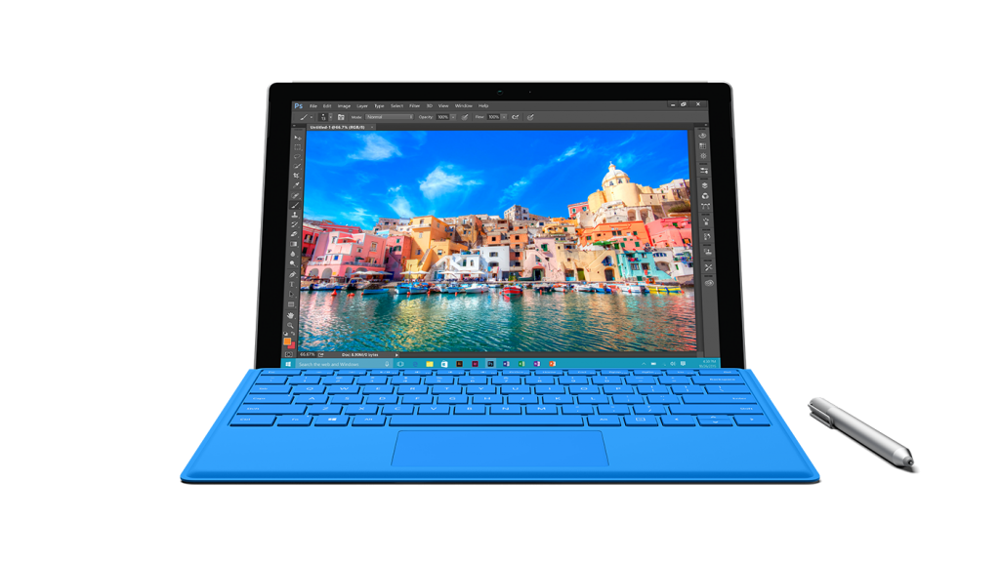

Surface Pro 4
L'équilibre parfait
Informations générales
La Surface Pro 4 est beaucoup plus performante que la Surface 3. Elle permet d'effectuer des tâches plus demandantes en ressources tout en étant légère et facilement transportable. Elle apporte la puissance d'un portable dans la transportabilité d'une tablette.
Caractéristiques
- Résolution de 2736 x 1824
- Stockage : SSD 128Go, 256Go, 512Go
- Système d'exploitation : Windows 10 Pro
- Poids de 786g
- Port USB 3.0
- Autonomie de 9h
- Jusqu'à 16Go de mémoire vive
- Processeur m3, i5 ou i7
- Caméra frontal de 5mpx